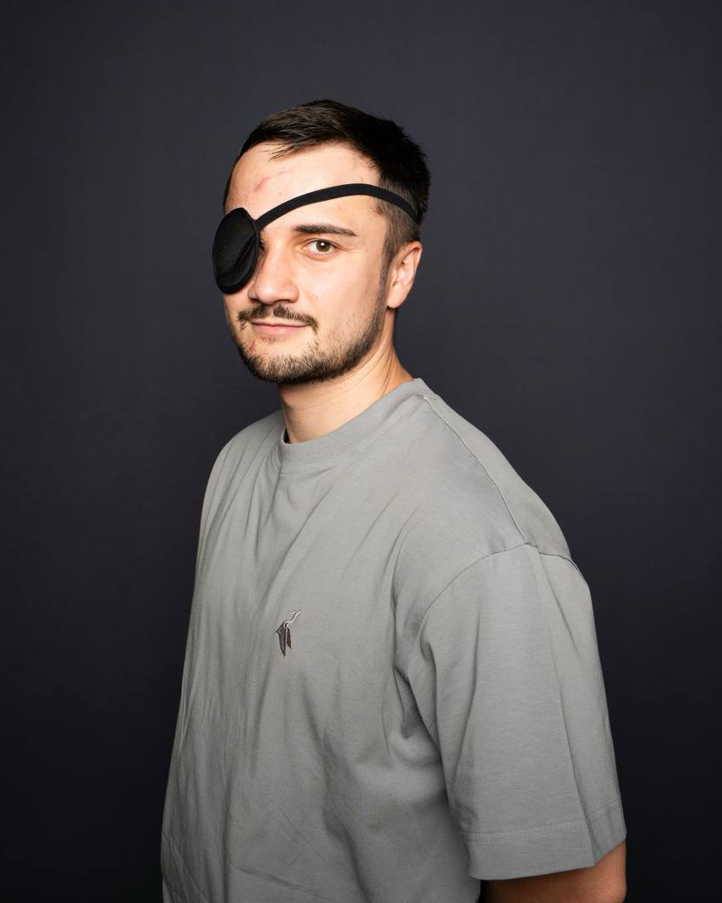

Павло Олександрович Козланюк, герой нашого інтерв’ю, — випускник Львівського поліграфічного фахового коледжу, колишній розвідник Головного управління розвідки, ветеран російсько-української війни, проєктний менеджер в ІТ-сфері та тренер студентської футзальної команди. Його історія є прикладом того, як можна залишатися сильним навіть після найважчих випробувань.
Народився Павло у Львові 1996 року. Своє дитинство він згадує як звичайне, але щасливе: багато часу проводив на вулиці, грав у футбол, гуляв із друзями та активно проводив дозвілля.
Важливим етапом у житті Павла стало знайомство з молодіжною організацією «Пласт», до якої він долучився 2010 року. Саме там минула значна частина його юнацьких років.
«Пласт» — це українська скаутська організація зі столітньою історією. Її основними цінностями є вірність Богові та Україні, допомога іншим і життя відповідно до пластового закону. Учасники організації займаються вихованням молоді, влаштовують різноманітні заходи, табори, проєкти, займаються волонтерством та активною громадською діяльністю. Саме завдяки «Пласту» Павло здобув багато навичок, які знадобилися йому в дорослому житті.
Спочатку Павло Козланюк навчався у школі Святої Софії у Львові, а згодом перейшов до школи № 91. Після дев’ятого класу він вступив до поліграфічного коледжу. Хлопець обрав спеціальність «Комп’ютерна обробка текстової, графічної та образної інформації». Пізніше продовжив навчання в Українській академії друкарства, де здобув освіту за напрямком менеджменту.
Вибір коледжу не був результатом довгих роздумів чи дитячої мрії. «Куди зміг вступити, туди й вступив», — жартує випускник. Втім, про свій вибір він не шкодує й досі.
Навчався добре, хоча й не був відмінником. Сам себе він називає «міцним середнячком». Протягом усіх чотирьох років отримував стипендію, що свідчить про відповідальне ставлення до навчання.
Він переконаний, що студенту важливо добре зарекомендувати себе з перших курсів. «Спочатку ти працюєш на заліковку, а потім заліковка працює на тебе», — говорить Павло.
Найкращим спогадом про коледж для випускника залишаються його одногрупники. За його словами, цей колектив виявився найкращим з-поміж усіх навчальних закладів, де йому доводилося вчитися. Багато одногрупників досі підтримують дружні стосунки.
Ще з дитинства Павло захоплювався футболом. Під час навчання активно виступав за збірні коледжу та академії з футболу й футзалу. Цей вид спорту став невід’ємною частиною його життя. Він не лише допомагав підтримувати фізичну форму, а й навчив працювати в команді, ухвалювати рішення та відповідати за результат.
Після завершення навчання Козланюк не працював за фахом. Натомість він пов’язав своє життя з ІТ-сферою. Сьогодні Павло працює проєктним менеджером. Його обов’язки охоплюють керування командою розробників, організацію робочих процесів та реалізацію різноманітних проєктів.
Після початку повномасштабного вторгнення росії 2022 року Павло, як і чимало українців, сподівався на швидке завершення війни.
Однак 2023 року Павло зазнав серйозної спортивної травми — розриву хрестоподібних зв’язок коліна. Майже рік пішов на відновлення.
Уже 2024 року він усвідомив, що війна триватиме довго, а тому вирішив не чекати, поки його долю вирішуватимуть інші. Чоловік добровільно підписав контракт на три роки та вступив до лав Збройних сил України. «Для мене було важливо самому обрати свій шлях і підрозділ», — пояснює він.
Військову службу герой проходив у лавах Головного управління розвідки як розвідник. За його словами, швидко адаптуватися на фронті допоміг саме колектив.
Майже всі бійці підрозділу були добровольцями, тому чітко розуміли свою відповідальність і мотиви служби. Перед виконанням бойових завдань військові понад пів року проходили інтенсивне навчання та підготовку, завдяки чому стали справжньою командою.
Підрозділ Козланюка виконував завдання на різних напрямках фронту, зокрема на Покровському та Херсонському. Позивний військового — «Леміш». Він супроводжує Павла ще з пластунських часів і залишився незмінним під час служби.
Проте 9 березня 2025 року життя героя кардинально змінилося.
Під час виконання бойового завдання автомобіль, у якому перебував Павло з товаришем, атакував FPV-дрон. Його побратим загинув на місці, а сам Леміш зазнав тяжких поранень. Внаслідок вибуху він втратив праве око, а також дістав численні осколкові ушкодження обличчя та голови.
Лікарі провели близько десяти операцій. Однією з найскладніших стала операція з видалення осколка, який через око потрапив у голову.
Саме відновлення після цього втручання ветеран називає найважчим етапом лікування.
Після трагедії боєць кілька місяців провів у шпиталі. Березень, квітень, травень і червень минули у боротьбі за здоровʼя та відновлення. Попри пережите, Павло не дозволив собі впасти у відчай. Він переконаний, що саме позитивне ставлення до життя стало ключем до порятунку. Уже в червні 2025 року, лише через кілька місяців після атаки, чоловік здійснив свій перший похід у гори.
Останню операцію — на вухо — йому зробили майже через рік після поранення.
За словами нашого героя, найбільшу підтримку йому надала дружина. Також поруч постійно були друзі. Говорячи про допомогу війську, Павло зазначає, що кожен українець має долучатися до спільної справи в міру своїх можливостей.
Він згадує дитячі малюнки, які надсилали бійцям на фронт. Такі подарунки не змінюють фізичного стану, але значно підносять моральний дух захисників. На думку Павла, важливо не залишатися осторонь війни та знаходити спосіб бути корисним державі.
Сьогодні Павло Козланюк повернувся до цивільного життя. Він продовжує працювати проєктним менеджером в ІТ-компанії та водночас розвиває власний стартап.
Його команда створює мобільний застосунок для пошуку нянь. Ідея проєкту полягає в тому, щоб допомогти батькам швидко знаходити перевірених фахівців для догляду за дітьми.
Крім цього, Павло займається тренерською діяльністю. Через втрату ока грати на колишньому рівні стало складно, тому він вирішив передавати досвід іншим. Наразі Леміш тренує футзальну команду Українського католицького університету.
Найголовнішою мрією герой називає створення міцної родини та народження дітей. Також він прагне багато подорожувати разом із дружиною і досягти повної фінансової незалежності.
Особливе місце у його житті посідають гори. На грудях у Павла є татуювання із сімома найвищими вершинами світу — своєрідна карта майбутніх досягнень. Одну з них він уже підкорив — Кіліманджаро в Африці 2019 року.
Попереду залишаються ще шість найвищих вершин різних континентів, які він мріє підкорити.
Наприкінці розмови Павло поділився головним життєвим уроком, який допоміг йому пройти крізь війну, тяжке поранення та тривалу реабілітацію. На його думку, будь-які труднощі легше долати тоді, коли поруч є близькі люди й коли людина не втрачає почуття гумору.
«Підтримка і гумор — це те, що допомагає проходити найважчі випробування. Саме вони роблять життя легшим і допомагають рухатися вперед», — підсумовує герой.
Підготувала студентка спеціальності «Журналістика» Анастасія Чапа